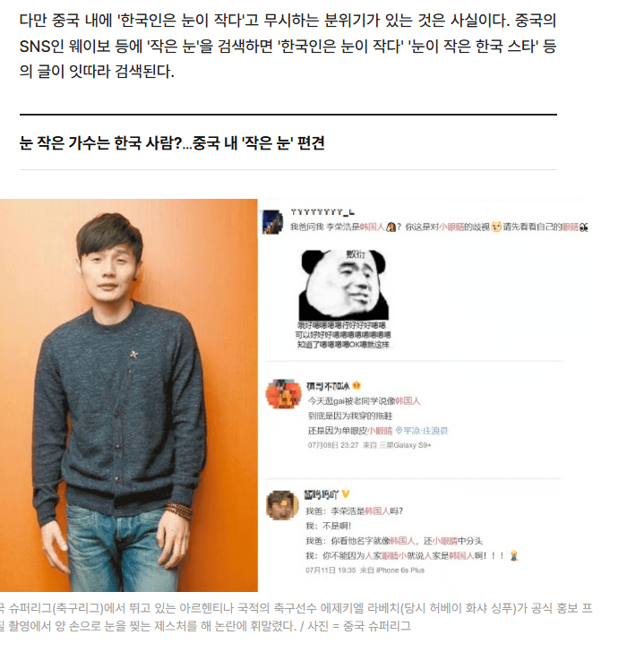
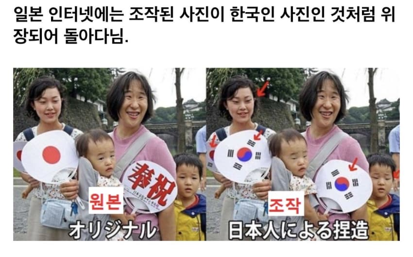
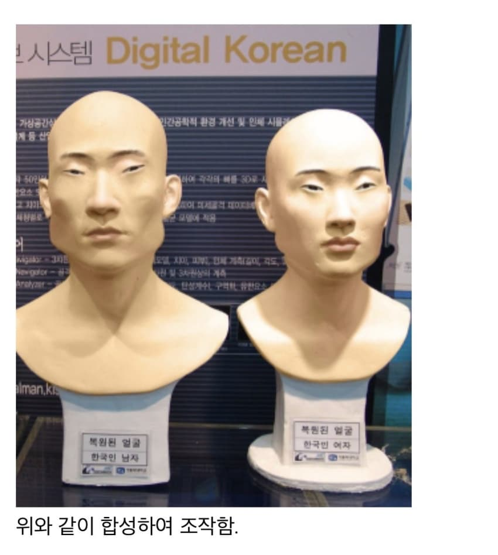
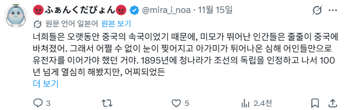

리룽하오라는 중국 연예인이 있는데 얘 별명이 "한국인"
이유 : 눈이 작아서



일본에서도 맨날 한국 눈 짝게 조작해서 선동하는데다가
한국인은 눈이 가늘고 작다는 인식이 있다고함
이에 대한 외국인들의 반응
ㅋㅋㅋㅋ
참고로 한국이 눈이 작다는 인식은 일본보다 중국에서 더 심함
이유는 모름

리룽하오라는 중국 연예인이 있는데 얘 별명이 "한국인"
이유 : 눈이 작아서



일본에서도 맨날 한국 눈 짝게 조작해서 선동하는데다가
한국인은 눈이 가늘고 작다는 인식이 있다고함
이에 대한 외국인들의 반응
ㅋㅋㅋㅋ
참고로 한국이 눈이 작다는 인식은 일본보다 중국에서 더 심함
이유는 모름
댓글
수집 당시 댓글 25개
ㅇㅇ · 11.19 06:28:24
· ㅇㅇ · 11.19 06:30:59
· ㅇㅇ · 11.19 06:33:58
· ㅇㅇ · 11.19 07:10:01
ㅇㅇ · 11.19 06:32:58
ㅇㅇ · 11.19 06:38:30
· ㅇㅇ · 11.19 06:40:20
· ㅇㅇ · 11.19 06:41:55
ㅇㅇ · 11.19 06:42:56
ㅇㅇ · 11.19 06:47:14
ㅇㅇ · 11.19 07:02:35
Ashley · 11.19 07:35:31
ㅇㅇ · 11.23 20:41:11
ㅇㅇ · 11.23 20:41:19
ㅇㅇ · 11.23 20:41:29
ㅇㅇ · 11.23 20:41:42
ㅇㅇ · 11.23 20:41:48
ㅇ · 11.23 20:42:20
ㅇㅇ · 11.23 20:42:30
ㅇㅇ · 11.23 20:42:43
ㅇㅇ · 11.23 20:42:51
영쌕스티 · 11.23 20:42:55
ㅇㅇ · 11.23 20:43:07
ㅇㅇ · 11.23 20:43:18
미치타 · 11.23 20:43:23